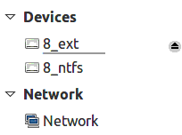
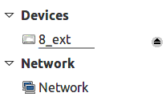

Кроме самого hook'а, я подготовил тестовую программу, которая ведет себя точно так же, как и Nemo. Исходные тексты находятся в подкаталоге code . Для начала разберемся с ограничениями, о которых говорилось в части 2.
Воспроизведем ситуацию, описанную в части 1 . Итак, подключим флешку, смонтируем раздел с меткой 8_ext и оставим несмонтированным раздел с меткой 8_ntfs.
Запустим тестовую программу:
david@athlonx2 ~/Projects/flaz14.github.io/how-to-hide-non-mounted-drives/code $ make test ./application Hi! I'm sample application! + /dev/sdb2 [8_ext] - /dev/sdb1 [8_ntfs] Bye!
Как видно из вывода, Nemo "видит" смонтированный том с меткой 8_ext и несмонтированный том с меткой 8_ntfs.
Теперь запустим тестовую программу с hook'ом:
david@athlonx2 ~/Projects/flaz14.github.io/how-to-hide-non-mounted-drives/code $ make test-hook
gcc -Wall -g -shared -ldl -fPIC `pkg-config --cflags gtk+-3.0` libnemohook.c -o libnemohook.so `pkg-config --libs
gtk+-3.0`
LD_PRELOAD=./libnemohook.so ./application
Hi! I'm sample application!
>
/dev/sda
<
>
/dev/sr0
<
>
/dev/sdb
<
+ /dev/sdb2 [8_ext]
Bye!
Строки вида
>
/dev/...
<
означают, что hook перехватил обращение к функции g_drive_get_volumes(). Так, первым физическим
диском, тома на котором попытался бы получить Nemo, является /dev/sda. На этом диске не нашлось
томов, поскольку g_drive_get_volumes() показывает только те тома, которых нет в
/etc/fstab. Далее, на физическом диска /dev/sr0 тоже не нашлось томов (перед запуском тестовой
программы в приводе оптических дисков было пусто). А вот на физическом диске /dev/sdb (это и есть
флешка) нашелся только один том.
Сравним результаты:
+ /dev/sdb2 [8_ext] - /dev/sdb1 [8_ntfs]
+ /dev/sdb2 [8_ext]
Т.е. при запуске тестовой программы с hook'ом несмонтированный раздел пропадает. Именно этого мы добивались.
Теперь пришло время подменить оригинальный Nemo костылем. Чтобы костыльный Nemo запускался из командной строки, достаточно создать скрипт-обертку с именем nemo (скрипт будет устанавливать LD_PRELOAD) и добавить путь к нему в переменную окружения PATH (самый простой способ - поместить скрипт в ~/bin). Но сработает ли скрипт-обертка, если запустить Nemo из стартового меню Cinnamon? Или с помощью горячей клавиши (например, Windows+E)? Или с помощью клавиши на мультимедийной клавиатуре? Я попробовал все варианты: способ с переменной окружения PATH работает всегда. Так что установим костыль:
david@athlonx2 ~/Projects/flaz14.github.io/how-to-hide-non-mounted-drives/code $ make install gcc -Wall -g -shared -ldl -fPIC `pkg-config --cflags gtk+-3.0` libnemohook.c -o libnemohook.so `pkg-config --libs gtk+-3.0` cp ./libnemohook.so ~/bin/libnemohook.so chmod 500 ~/bin/libnemohook.so cp ./nemo ~/bin/nemo chmod 500 ~/bin/nemo
Как видим, скрипт-обертка и собственно hook размещаются в каталоге ~/bin/. Чтобы убрать костыль, достаточно набрать make uninstall (или же удалить файлы вручную).
Возьмем все ту же флешку с двумя разделами: 8_ext и 8_ntfs. Раздел 8_ext оставим
смонтированным, а 8_ntfs - размонтируем. Запустим оригинальную версию Nemo (нужно напрямую вызвать
/usr/bin/nemo из командной строки). Увидим картинку, как в
части 1
:

Теперь запустим Nemo с костылем (как уже говорилось выше, для этого не нужно дополнительных усилий, достаточно нажать на Files в стартовом меню) и увидим все то же самое, только без 8_ntfs на боковой панели, что проиллюстрировано на рисунке 3.2:

Достоинства:
/usr/bin/nemo) в случае необходимости. Кроме того, все
изменения касаются только одного пользователя. Чтобы вернуть все как было, достаточно удалить
nemo и libnemohook.so из ~/bin/;
Недостатки:
__________
↑ Я проверил только в Linux Mint 17.1 Cinnamon i686.
↑ Другие программы могут отображать что им будет угодно. Например, в диалоговом окне открытия файла Firefox на боковой панели отображаются как смонтированные, так и несмонтированные тома. Видимо, чтобы привести все к единообразному виду, нужно использовать "глобальный" hook.